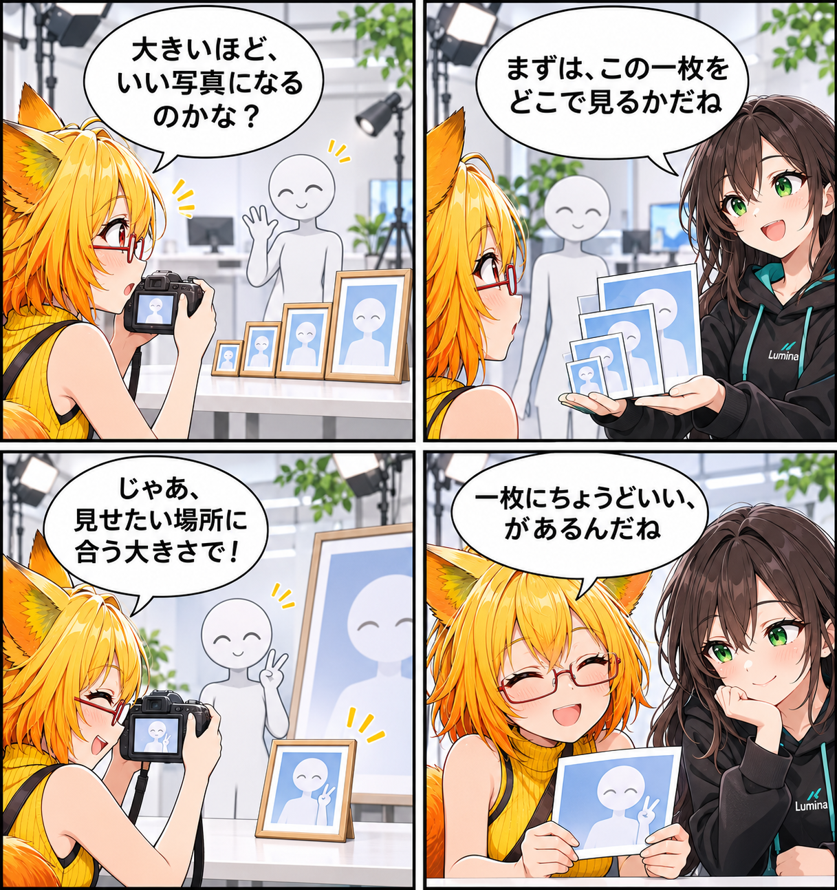

2026.11.20 / Development Log / Feature Spotlight
閑話休題：一枚のために、解像度を選ぶ
新規実装の報告ではなく、VRASに既にある撮影解像度プリセットを紹介します。撮りたい一枚の用途にあわせて、まず無理のない大きさを選んでから撮影へ進める仕組みです。
今回は feature-spotlight（機能紹介） です。集計期間は2026-11-19 03:00:00 JSTから2026-11-20 02:59:59 JSTまで、対象はViewerの
main です。集計終了時点のHEADは c33733a41be121b814a1732df8c9eae089ace2ea、期間内コミットは0件でした。Assets/Scenes/MainScene.unity の未コミット差分は、期間内に実装された事実を確定できないため実績には含めていません。
一枚に合う大きさから
VRASの撮影には、1280×720、1920×1080、2560×1440、3840×2160の解像度プリセットがあります。用途や扱いやすさに合わせて、撮影前に近いサイズを選べます。
撮影のための品質を整える
撮影時は、選択した解像度で専用の出力を作ります。保存している撮影サイズは次回の起動でも使えるため、いつもの用途に合わせた入口を保てます。
無理のない範囲で
解像度は最小640×360から最大3840×2160の範囲に収めます。大きな画像ほど常に正解というわけではなく、見せたい場所と扱いやすさに合わせて選ぶことが大切です。
今回の紹介範囲
これは現行実装の紹介です。当日に新しく実装・検証完了したことを示すものではありません。
4コマの話
ろひは「大きいほどいい」と迷い、ルミナと用途を思い出します。まずは扱いやすい一枚を撮ってみると、選ぶべきなのは数字の大きさではなく、その写真が行く先だと気づきます。
まとめ
VRASの撮影解像度プリセットは、撮りたい一枚に合わせて1280×720から3840×2160までのサイズを選べる既存機能です。目的に合う大きさから、撮影を始められます。